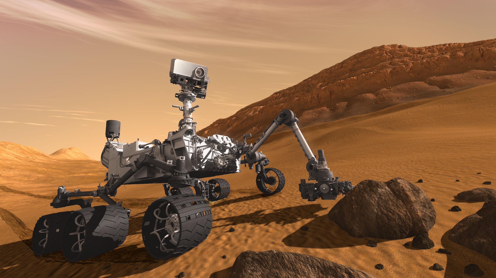
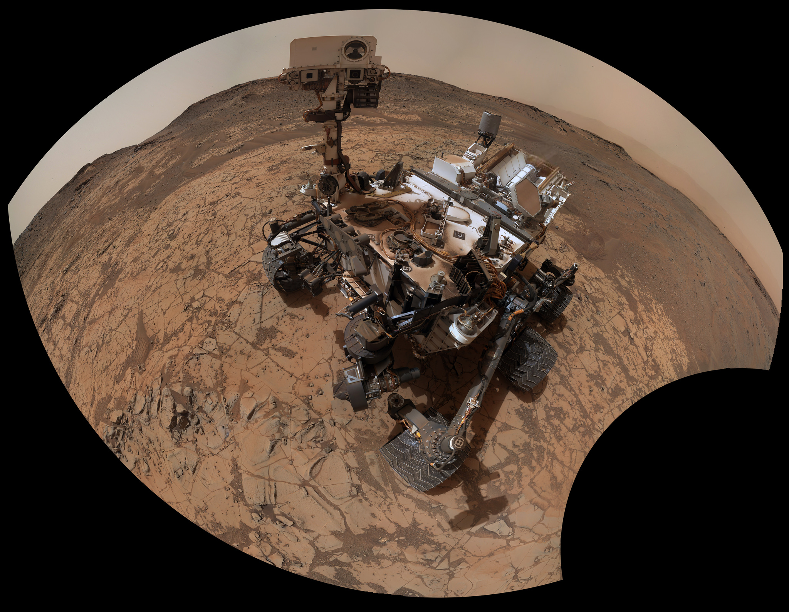
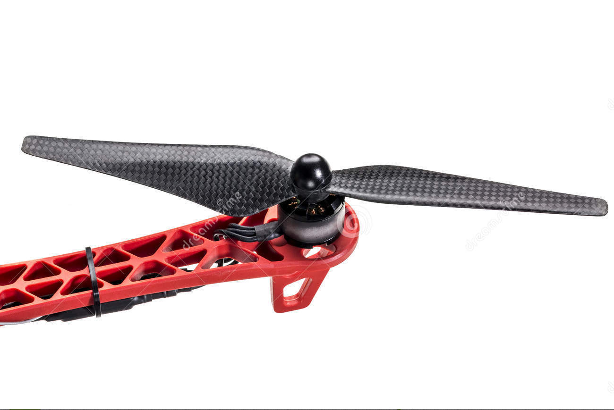

Robots!
What are Robots?
machines capable of carrying out a complex series of actions automatically, especially one programmable by a computer
Why do we need Robots?
robots are used to do repetitive actions

Why do we need Robots?
or jobs considered too dangerous for humans
Where are Robots used?
Uses of Robots? - Factories
Uses of Robots? - Factories
Uses of Robots? - Science
Uses of Robots? - Exploration
Uses of Robots? - Exploration
Uses of Robots? - Exploration

Uses of Robots? - Exploration
Uses of Robots? - Exploration
Uses of Robots? - Airplanes
Uses of Robots? - Homes
Uses of Robots? - Photography
Parts of Robots?
Parts of Robots? - Mechanical
Parts of Robots? - Mechanical
Parts of Robots? - Mechanical
Parts of Robots? - Mechanical
Parts of Robots? - Electrical
Parts of Robots? - Electrical
Parts of Robots? - Software

Parts of Robots? - Software
Parts of Robots? - Artificial Intelligence
Robots Under Water!
Robots Under Water!
To date, we have explored less than five percent of the ocean.
-National Oceanic and Atmospheric Administration
What can we do with Robots underwater?
Extracting Oil and Gas

Monitoring the Water
Undersea Cables
Undersea Cables
Search and Rescue
Challenges in Underwater Robots?
Underwater Robotics
Waterproofing
Underwater Robotics
How do you communicate with your Robot??
Underwater Robotics
Communication - Wired
Underwater Robotics
Communication - Wired
Underwater Robotics
Communication - Light

Underwater Robotics
Communication - Sound
Singapore AUV Challenge

Enough with all the theory!
What does it take to build a robot?
Like with most things, you start small
But a robot has so many parts!
What does the robot need to do?
An underwater robot
- Heave/Dive (Up/Down)
- Forward/Reverse
- Image recognition
- Waterproof
Come up with a fancy plan!
Break it down!
Smaller
Some thing you can handle
Test Test Test
Slightly harder when it has to be underwater!
Let us add a bit more water!
Shiny New Mechanical Structure
Fully assembled
Testing without electronics
But is it waterproof?
Not Quite
Back to the drawing board!
In this case, a foodcourt table!
My extremely fancy plan!
Trust me, I am an engineer!